APIE MUS
Mes esame „Genys“
San Francisko lituanistinė mokykla „Genys“ – tai vieta, kur lietuvių kalba, kultūra ir tradicijos atgyja!
Įsikūrę San Francisko įlankos vietovėje, šiaurinėje Kalifornijoje, mes kuriame šiltą ir jaukią bendruomenę, kur vaikai ne tik mokosi, bet ir smagiai leidžia laiką, kuria draugystes bei atranda lietuvišką paveldą.
Daugiau nei mokykla – tai bendruomenė!
SF Genio mokykloje švenčiame visas svarbiausias lietuviškas šventes, kuriame tradicijas ir stipriname ryšius su Lietuva.
Čia vaikai ne tik mokosi, bet ir patiria tikrą bendrystę – draugystės, užsimezgusios mokykloje, išlieka visam gyvenimui!
Mokymosi galimybės kiekvienam amžiui
Kur mus rasti
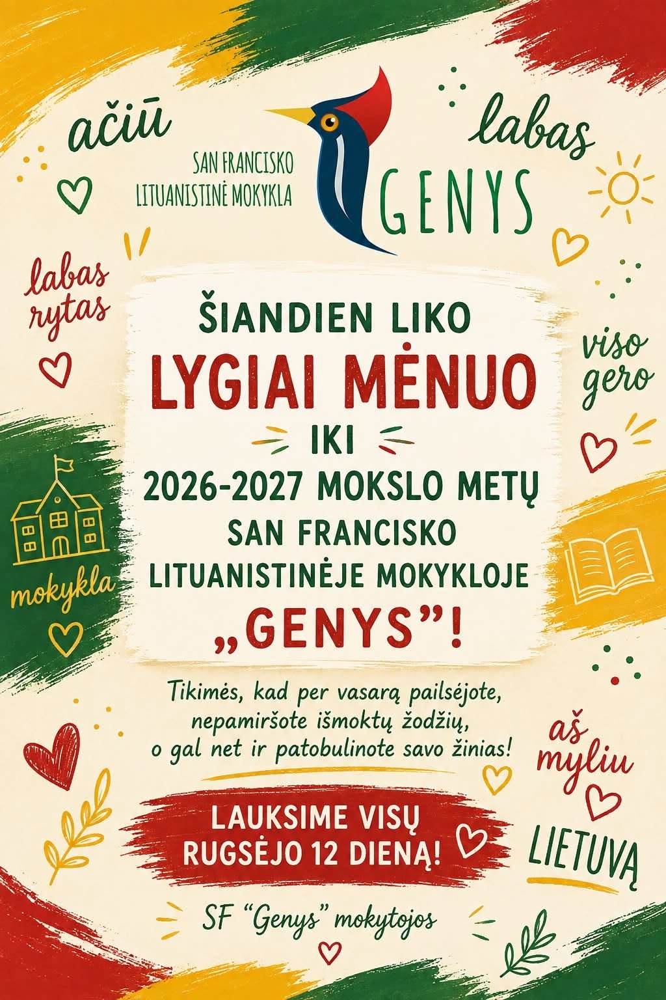
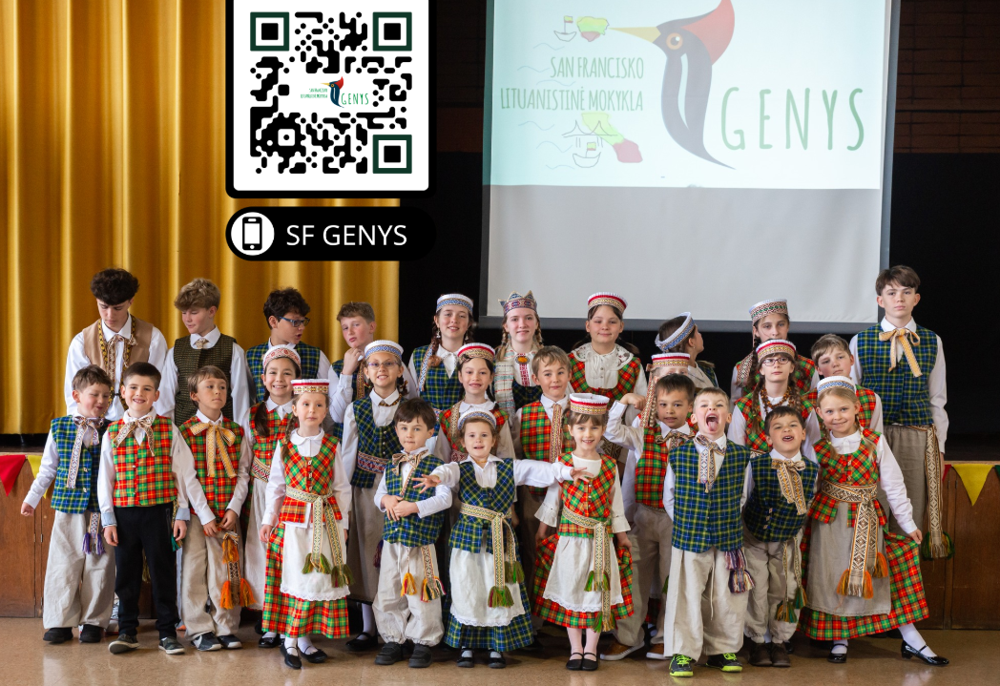
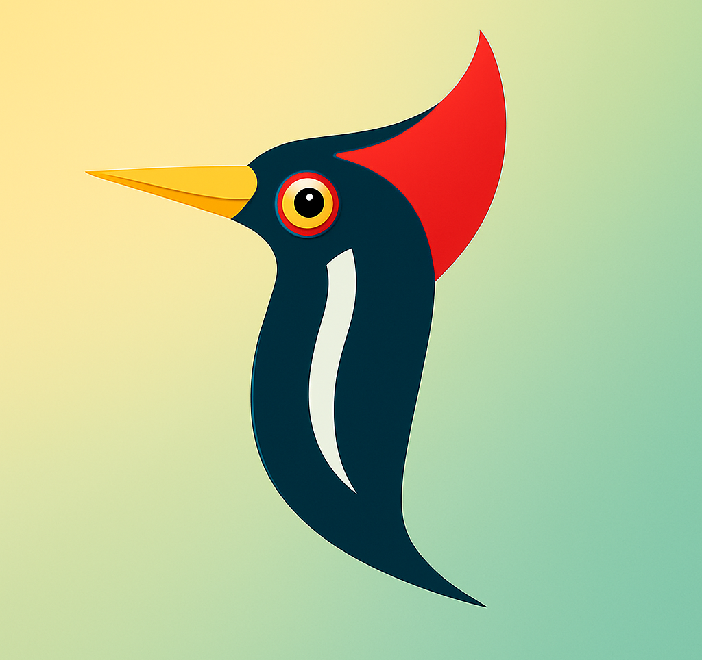
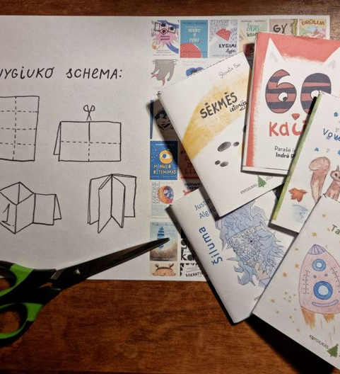
📍 Mūsų adresas:
19806 Wisteria Street,
Castro Valley, CA 94546
📧 Susisiekite su mumis: info@sfgenys.org
🌍 Daugiau informacijos: www.sfgenys.org
🌱 Prisijunkite prie mūsų – puoselėkime lietuvybę kartu!
Ankstesni mokyklos įrašai
Čia pateikiami išsaugoti ankstesni mokyklos pranešimai; jų datos nurodytos pačiuose įrašuose.
ADVENTO KNYGIUKAI
Sveiki!
Labai laukiame visų gruodžio 3d. pamokose, na o ŽIEMOS ŠVENTĖ mokykloje vyks (gruodžio 17 d.). Duokite mums žinoti jeigu negalėsite dalyvauti Žiemos Šventėje. Zuikučiai prie mūsų prisijungs - gruodžio 10 ir 17 dienomis.
ADVENTAS IR LIETUVIŠKŲ MINI KNYGUČIŲ PROJEKTAS:
Prieš porą dienų jau prasidėjęs Advento laikotarpis atneša daug jaukumo į kiekvieno namus, tačiau dar daugiau jo suteikia knygos ir pasakiškos jose užrašytos istorijos.
Ta proga dalinamės 2022 ADVENTO KNYGIUKAIS.
- KNYGIUKAI - tai trumpos, žaismingos istorijos, kurias su tėvėlių pagalba vaikai gali atsispausdinti, susilankstyti, vartyti ir skaityti!
- Instrukcijas, kaip sulankstyti knygiuką, galite rasti www.knygiukai.lt arba www.KnygiukaiTau.lt puslapiuose. Arba tiesiog pažiūtėkite šias VIDEO instrukcijas.
- Šiais metais didelė knygiukų kūrėjų komanda kviečia San Franciscko GENIO mokyklos mokinius ir jų tėvelius, kiekvieną Advento dieną pasitikti su nauja knygiukų istorija.
- Šį šeštadienį, gruodžio 3d. bibliotekoje 12:30 - kviečiame budinčius (ar galinčius tėvelius) padėti mums lankstyti paprastenius knygiukus. Norime ŽIEMOS ŠVENTĖS metu padaryti siurprizą mūsų mokinukams. Šš....
2022 metų knygiukai:
1. Blynai ir sniegas.
2. Iš kur tas lietus?
3. Kai pirmą kartą pasnigo.
4. Kalėdinis troškimas.
5. Keturi kartai NE.
6. Krokas ir Dilas.
7. Kur slepiasi lobis?
8. Liamoriukas žiemą.
9. Magdės pyktis.
10. Mano didelis šuo.
11. Mažieji Karolio draugai.
12. Mergaitė ir zylutė.
13. Netikėti svečiai.
14. Palapinė
15. Kaip pas pelėdą Drūliją Kalėdos atėjo.
16. Pono šalčio paroda.
17. Sėkmės istorija.
18. Senojoje girioje 1 ir Senojoje giroje 2.
19. Stebuklinga plunksna.
20. Stebuklingi raktai.
21. Šiluma.
22. 60 kačių.
23. Tado raketa.
24. Voverė Julė.
Gražaus, jaukaus ir šilto Advento laikotarpio!
RUDENS ŠVENTĖS AKIMIRKOS
Atverti RUDENS ŠVENTĖS AKIMIRKOS ↗
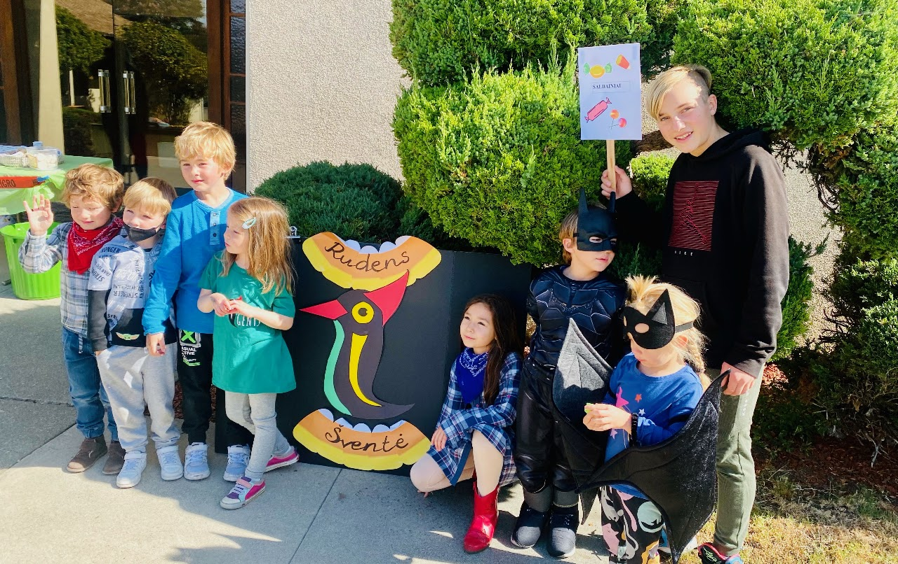
Šiandien triukšmingai ir turiningai siautėme Rudenėlio Šventėje!
Integravome rudens tradicijas su Helovyniška kostiumų ir bendruomenės švente.
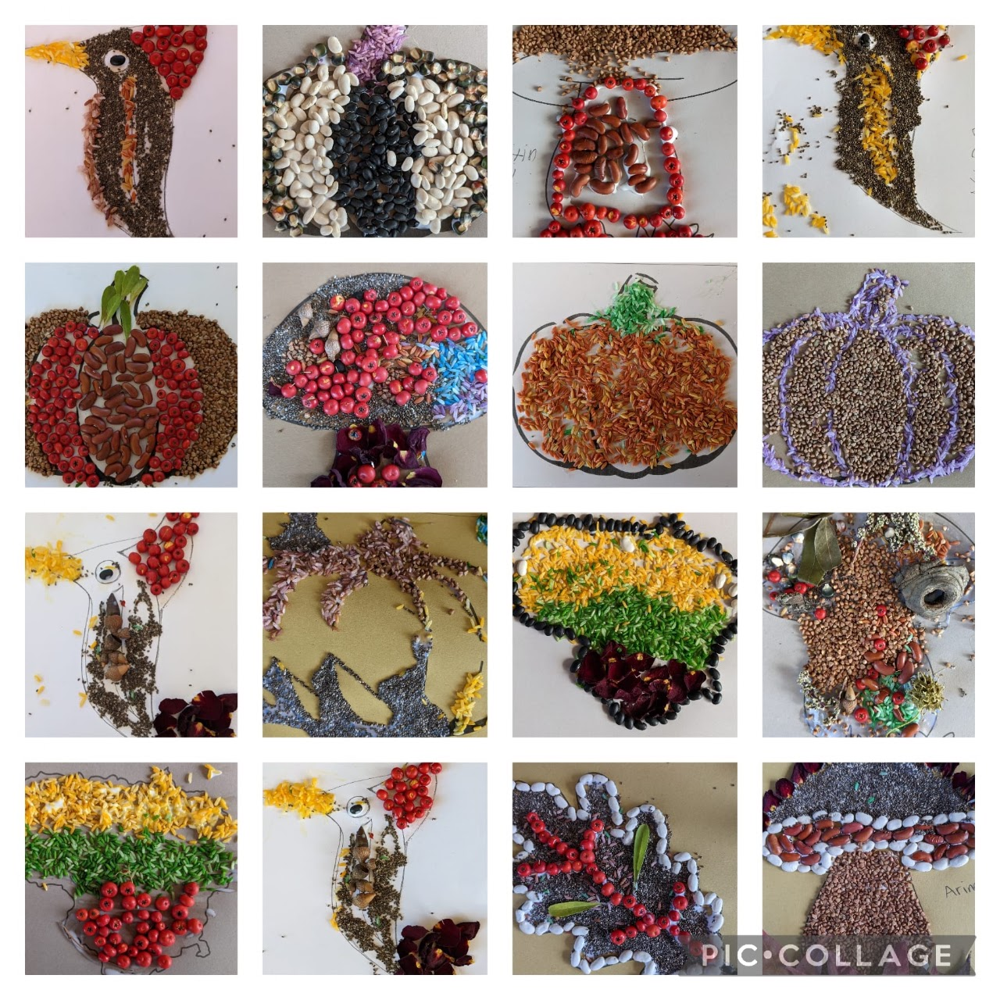
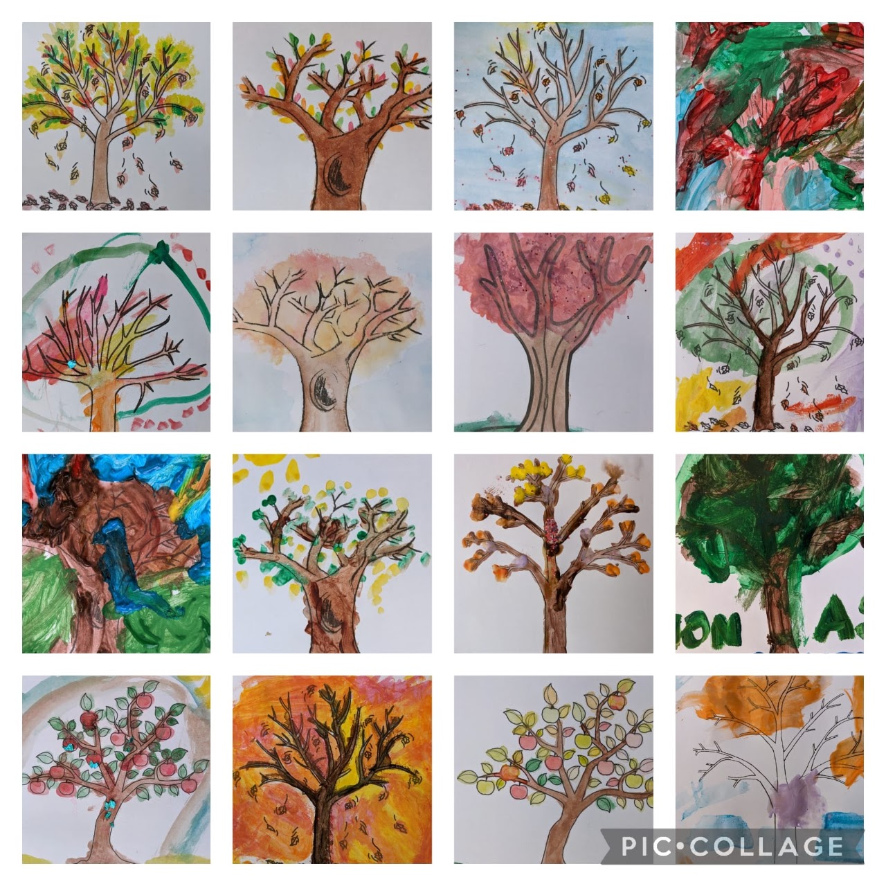
Kviečiame dalyvati webinare: DVIKALBYSTĖS NAUDA GIMTOSIOS KALBOS IŠSAUGOJIMO KONTEKSTE.
Kada: Sekmadienį, LAPKRIČIO 13d - 9 val ryto.
https://us06web.zoom.us/j/85851134657
Seminarą moderuos Loreta Vilkytė (knygos "Kaip padėti vaikams užaugti dvikalbiams" autorė.
Dvikalbystės skatinimo metodus nagrinės Vilniaus Universiteto daktarė Inga Hilbig ir išgirsite dviejų Vakarų Pakrantės Lituanistinių mokyklų patirtį.
Dalinsimės SF Genio mokyklos perspektyva bei pasiekimais.
Dalyvaukite ir paremkite mūsų mokyklą.
Ačiū,
SF Genio Komanda
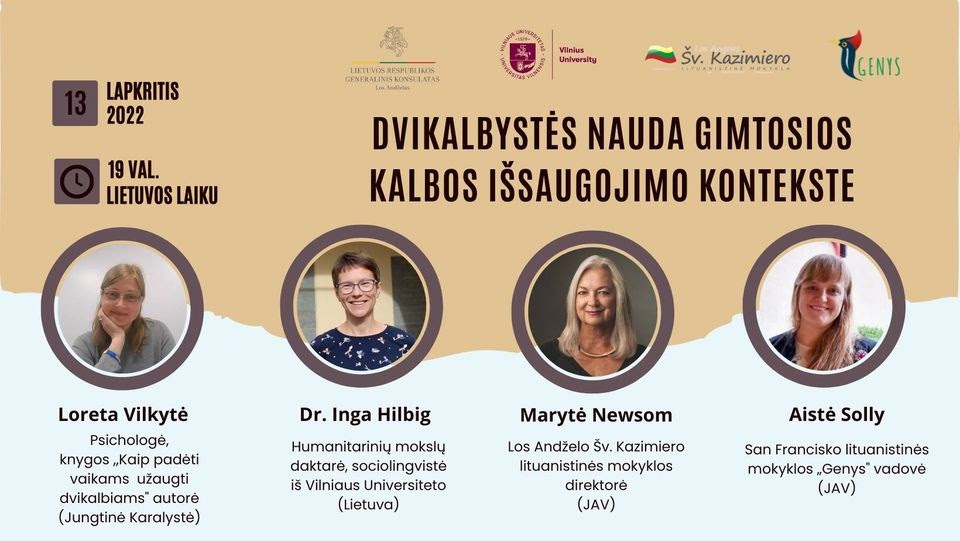
Su 2021-2022 mokslo metais!
AR ŽINOJOTE? PASAULYJE VEIKIA VIRŠ 200 LITUANISTINIŲ MOKYKLŲ!
Ar Jūsų vaikai lanko vieną iš jų? O gal nežinote, kur yra artimiausia mokykla? Abejojate, ar pavyks mokytis kelių kalbų? Manote, kad mokytis kalbos reikėjo pradėti anksčiau? Dvejojate, ar lietuvių kalbos Jūsų vaikui prireiks?
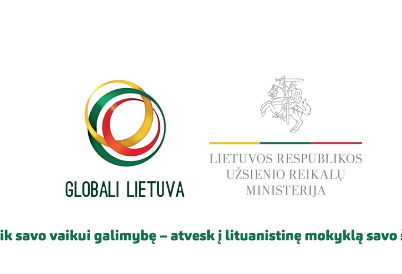
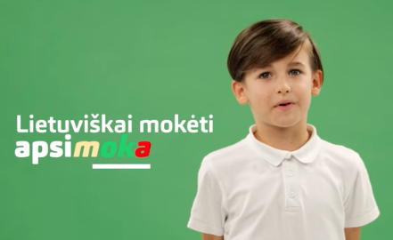
Į Jūsų klausimus ir abejones atsako patys vaikai!
Suteikite savo vaikams galimybę – atveskite juos į lituanistinę mokyklą savo šalyje!
Mokyklų sąrašą rasite čia: bit.ly/3ghEfb4
#GlobaliLietuva #lituanistinisugdymas Užsienio reikalų ministerija
ŠEŠTADIENIS, KAI NORISI Į MOKYKLĄ!
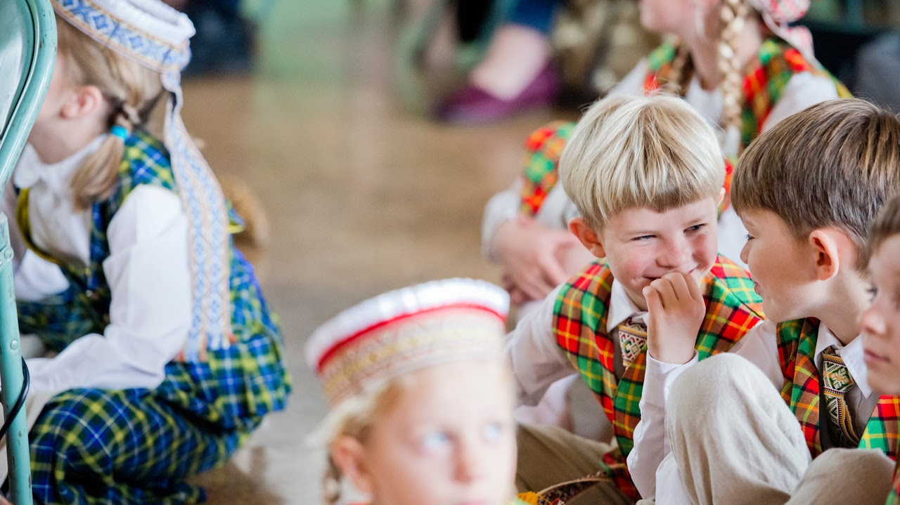
Šeštadieninė lituanistinė mokykla „Genys”, burianti San Francisko lietuvius, buvo įkurta 2006 metais. Viskas prasidėjo, kai keturios mamos entuziastės nusprendė, kad būtų šaunu surasti lietuvę mokytoją, kuri norėtų leisti laiką su vaikais šeštadieniais ir padėti jiems kalbėti lietuvių kalba.
Mūsų tikslas- sukurti lietuvių išeivių vaikams aplinką, kurioje jie galėtų daugiau sužinoti apie Lietuvą, mokytis kalbos, gilintis į papročius bei istoriją ir susirasti lietuviškai kalbančių draugų.
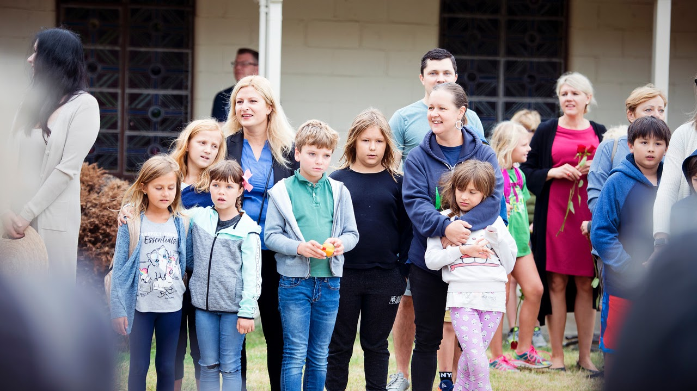
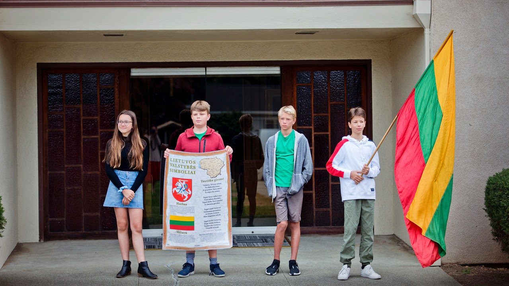
Kiekvienais metais mūsų mokykla auga ir plečiasi. Mokiniai dalyvauja dainų ir šokių šventėse, spektakliuose, televizijos laidose, įvairiuose projektuose, tarptautiniuose rašinių, piešinių, atvirukų, ir animacijų konkursuose. Covid-19 pandemijos metu tęsėme mokslus nuotoliniu būdu. Na o 2021-2022 mokslo metais vėl grįžtame į patalpas :)